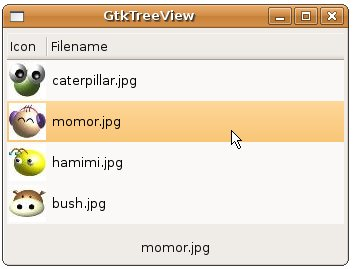

| 在看這篇之前，請先看過 GtkComboBox 以及 GtkComboBox 與 GtkListStore，由於以Model-View的方式設計，您可以在不修改Model的情況下，為Model換上另一個顯示的外觀（View），例如為 GtkComboBox 與 GtkListStore 範例中建立的GtkListStore換上GtkTreeView的外觀。 具體來說，也就是該範例中的createModel()內容無需改變，將GtkComboBox的相對應程式碼，換成建立GtkTreeView的程式碼，例如： GtkWidget *treeView = gtk_tree_view_new_with_model(createModel());
GtkTreeViewColumn是GtkTreeView中的列代表，可用以設定該列的內容如何
繪製以及一些相關屬性，基本上以上程式片段中，gtk_tree_view_column_new_with_attributes()與
gtk_tree_view_append_column()函式可以用
gtk_tree_view_insert_column_with_attributes()函式來簡化，也就是可以簡化為：GtkCellRenderer *renderer = gtk_cell_renderer_pixbuf_new(); GtkTreeViewColumn *column = gtk_tree_view_column_new_with_attributes( "Icon", renderer, "pixbuf", PIXBUF_COL, NULL); gtk_tree_view_append_column(GTK_TREE_VIEW (treeView), column); renderer = gtk_cell_renderer_text_new(); column = gtk_tree_view_column_new_with_attributes( "Filename", renderer, "text", TEXT_COL, NULL); gtk_tree_view_append_column(GTK_TREE_VIEW (treeView), column); GtkWidget *treeView = gtk_tree_view_new_with_model(createModel());
GtkCellRenderer *renderer = gtk_cell_renderer_pixbuf_new(); gtk_tree_view_insert_column_with_attributes( GTK_TREE_VIEW(treeView), -1, "Icon", renderer, "pixbuf", PIXBUF_COL, NULL); renderer = gtk_cell_renderer_text_new(); gtk_tree_view_insert_column_with_attributes( GTK_TREE_VIEW(treeView), -1, "Filename", renderer, "text", TEXT_COL, NULL); 在GtkTreeView當中的選擇，是以為個GtkTreeSelection物件作代表，當選擇改變時，會發出"changed"的Signal，所以要連結Signal與Callback函式，可以如下進行： GtkTreeSelection *selection = gtk_tree_view_get_selection(GTK_TREE_VIEW(treeView));
g_signal_connect(G_OBJECT(selection), "changed", G_CALLBACK(selection_changed), label); 至於Callback函式的部份大同小異，您要從傳遞的GtkTreeSelection中取得GtkTreeView，從GtkTreeView中取得 GtkTreeModel，再使用gtk_tree_selection_get_selected()將GtkTreeIter指向選中的列，以取得您 想取得的欄位資料： gboolean selection_changed(GtkTreeSelection *selection, GtkLabel *label) {
GtkTreeView *treeView; GtkTreeModel *model; GtkTreeIter iter; gchar *active; treeView = gtk_tree_selection_get_tree_view(selection); model = gtk_tree_view_get_model(treeView); gtk_tree_selection_get_selected(selection, &model, &iter); gtk_tree_model_get(model, &iter, 1, &active, -1); gtk_label_set_text(label, active); } 下面的範例是以上說明的綜合示範：
#include <gtk/gtk.h> 一個執行的結果畫面如下所示：  |